Following the Money: 25 Years of Spending in South Orange-Maplewood
Source:vignettes/somsd-school-spending.Rmd
somsd-school-spending.Rmd
library(njschooldata)
library(ggplot2)
library(dplyr)
library(scales)
library(purrr)
library(tibble)
# The arts section reads a School Performance Report workbook (~100 MB), so give
# the download more than R's stingy 60-second default.
options(timeout = max(600, getOption("timeout")))
theme_nj <- function() {
theme_minimal(base_size = 14) +
theme(
plot.title = element_text(face = "bold", size = 16),
plot.subtitle = element_text(color = "gray40"),
plot.caption = element_text(color = "gray55", size = 9),
panel.grid.minor = element_blank(),
legend.position = "bottom"
)
}
somsd_navy <- "#1F3A5F"
somsd_orange <- "#E67E22"
somsd_teal <- "#16A085"
somsd_red <- "#C0392B"
somsd_purple <- "#8E44AD"The Taxpayers’ Guide to
Educational Spending (TGES) is the New Jersey Department of
Education’s annual report on what every district spends, broken down per
pupil into classroom instruction, support services, administration,
plant operations, and more. njschooldata pulls it straight
from the state for every year back to 2001 (the pre-2011 editions were
branded the “Comparative Spending Guide”).
This article follows one district, South Orange-Maplewood (SOMSD), over a quarter century. It’s a single mid-sized K-12 district in Essex County, but the patterns are the kind every NJ taxpayer eventually asks about: where the money goes, why the benefits line keeps climbing, and who actually pays the bill.
fetch_tges(year) returns one tidy data frame per
spending indicator:
spending_2025 <- fetch_tges(2025)
# one tidy table per TGES indicator (CSG1 = total budgetary cost per pupil)
names(spending_2025)
#> [1] "CSG1" "CSG10" "CSG11"
#> [4] "CSG12" "CSG13" "CSG14"
#> [7] "CSG15" "CSG16" "CSG17"
#> [10] "CSG18" "CSG19" "CSG1AA_AVGS"
#> [13] "CSG2" "CSG20" "CSG21"
#> [16] "CSG3" "CSG4" "CSG5"
#> [19] "CSG6" "CSG7" "CSG8"
#> [22] "CSG8A" "CSG9" "SUMMARY"
#> [25] "SUMYR3" "SUMYR3C" "SUMYR4"
#> [28] "SUMYR4C" "SUMYR5" "SUMYR5C"
#> [31] "VITSTAT_TOTAL" "DETAIL_FY23" "DETAIL_FY24"
#> [34] "OCTOBER2024_DRTRS"Each table is district-level and long, with a three-year window per
report: two finalized Actuals years plus the current
Budgeted year. SOMSD is district code
4900.
spending_2025[["CSG1"]] %>%
filter(district_id == "4900") %>%
select(district_name, end_year, calc_type, `Per Pupil costs`, `District rank`)
#> # A tibble: 3 × 5
#> district_name end_year calc_type `Per Pupil costs` `District rank`
#> <chr> <dbl> <chr> <dbl> <int>
#> 1 South Orange-Maplewood 2023 Actuals 18321 52
#> 2 South Orange-Maplewood 2024 Actuals 18952 49
#> 3 South Orange-Maplewood 2025 Budgeted 20066 41
# Pull every published guide, 2001-2025. fetch_tges(2025) was already fetched
# above, so reuse it and download the rest. Drop (with a visible warning) any
# year that fails rather than letting one network hiccup kill the whole build.
reports <- list("2025" = spending_2025)
for (y in 2001:2024) {
reports[[as.character(y)]] <- tryCatch(
fetch_tges(y),
error = function(e) {
warning(paste("TGES", y, "failed:", conditionMessage(e)))
NULL
}
)
}
reports <- reports[!vapply(reports, is.null, logical(1))]
reports <- reports[order(as.integer(names(reports)))]
SOMSD <- "4900"
# Pull one SOMSD value column across every report and keep one row per school
# year. Each actual recurs in consecutive guides; we keep the most recent
# (most finalized) report's figure. VITSTAT/CSG16 carry no calc_type, so the
# calc filter is skipped for them.
somsd_series <- function(table, value_col, calc = "Actuals") {
map_dfr(names(reports), function(y) {
d <- reports[[y]][[table]]
if (is.null(d) || !value_col %in% names(d)) return(NULL)
r <- filter(d, !is.na(district_id), district_id == SOMSD)
if ("calc_type" %in% names(r)) r <- filter(r, calc_type == calc)
if (nrow(r) == 0) return(NULL)
tibble(report_year = as.integer(y), end_year = r$end_year, value = r[[value_col]])
}) %>%
group_by(end_year) %>%
slice_max(report_year, n = 1, with_ties = FALSE) %>%
ungroup() %>%
arrange(end_year)
}1. A decade of flat spending, then a sharp surge
For most of the 2010s, SOMSD’s actual budgetary cost per pupil barely moved: about $14,300 in 2010 and $14,700 in 2019, a real-terms decline once you account for inflation. Then it broke loose. Actuals jumped from $14,660 (2020) to $18,952 (2024), and the 2025 budget sets it at $20,066.
pp <- somsd_series("CSG1", "Per Pupil costs", "Actuals")
pp_budget_2025 <- somsd_series("CSG1", "Per Pupil costs", "Budgeted") %>%
filter(end_year == 2025)
stopifnot(nrow(pp) > 0, nrow(pp_budget_2025) == 1)
pp
#> # A tibble: 26 × 3
#> report_year end_year value
#> <int> <dbl> <dbl>
#> 1 2001 1999 7946
#> 2 2002 2000 8260
#> 3 2003 2001 8691
#> 4 2004 2002 9219
#> 5 2005 2003 9626
#> 6 2006 2004 10271
#> 7 2007 2005 11101
#> 8 2008 2006 11366
#> 9 2009 2007 12594
#> 10 2010 2008 12983
#> # ℹ 16 more rows
ggplot(pp, aes(end_year, value)) +
annotate("rect", xmin = 2010, xmax = 2019, ymin = -Inf, ymax = Inf,
fill = "gray85", alpha = 0.5) +
annotate("text", x = 2014.5, y = 19500, label = "flat decade",
color = "gray45", fontface = "italic") +
geom_line(color = somsd_navy, linewidth = 1.2) +
geom_point(color = somsd_navy, size = 2) +
geom_point(data = pp_budget_2025, aes(end_year, value),
color = somsd_orange, size = 3, shape = 17) +
annotate("text", x = 2024.7, y = pp_budget_2025$value + 900,
label = "2025\nbudgeted", color = somsd_orange, size = 3.3) +
scale_y_continuous(labels = dollar) +
scale_x_continuous(breaks = seq(2000, 2025, 5)) +
labs(title = "SOMSD per-pupil spending: flat, then a post-2020 surge",
subtitle = "Budgetary cost per pupil, actuals (2025 is budgeted)",
x = NULL, y = "Cost per pupil",
caption = "Source: NJ DOE Taxpayers' Guide to Educational Spending") +
theme_nj()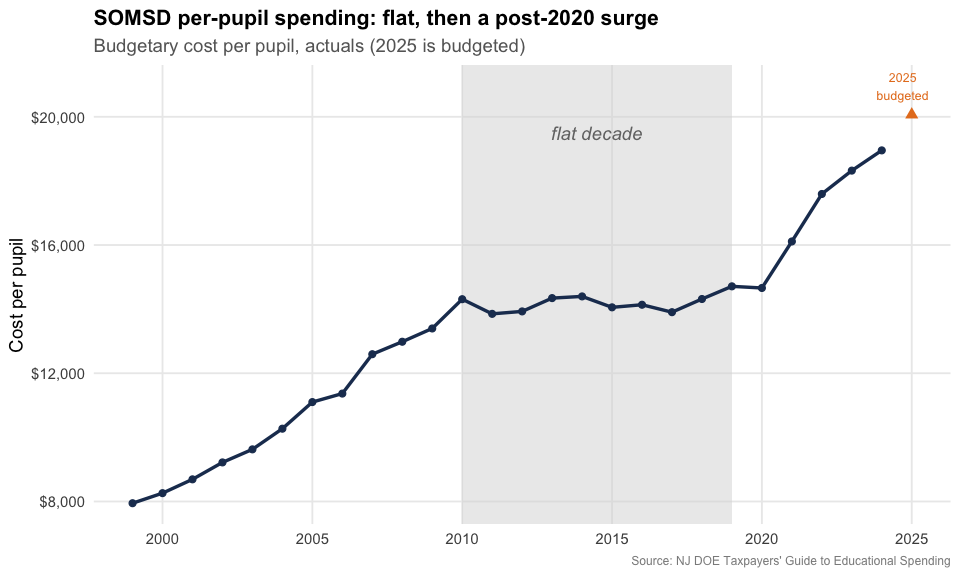
2. Benefits ate the salary line
Here’s the trend that drives every contentious school budget meeting: employee benefits as a share of salaries. In SOMSD it has more than doubled, from 11.8% in 1999 to 24.4% in 2024. Health-plan premiums (SEHBP) are the main driver, and they keep climbing faster than pay.
benefits <- somsd_series("CSG14", "% of Total Salaries", "Actuals")
stopifnot(nrow(benefits) > 0)
benefits
#> # A tibble: 26 × 3
#> report_year end_year value
#> <int> <dbl> <dbl>
#> 1 2001 1999 0.118
#> 2 2002 2000 0.13
#> 3 2003 2001 0.142
#> 4 2004 2002 0.142
#> 5 2005 2003 0.164
#> 6 2006 2004 0.186
#> 7 2007 2005 0.195
#> 8 2008 2006 0.214
#> 9 2009 2007 0.211
#> 10 2010 2008 0.214
#> # ℹ 16 more rows
ggplot(benefits, aes(end_year, value)) +
geom_area(fill = somsd_orange, alpha = 0.25) +
geom_line(color = somsd_orange, linewidth = 1.2) +
geom_point(color = somsd_orange, size = 2) +
scale_y_continuous(labels = percent_format(accuracy = 1),
limits = c(0, NA)) +
scale_x_continuous(breaks = seq(2000, 2025, 5)) +
labs(title = "Employee benefits as a share of salaries doubled",
subtitle = "SOMSD benefit costs divided by total salaries, 1999-2024",
x = NULL, y = "Benefits / salaries",
caption = "Source: NJ DOE TGES (CSG14)") +
theme_nj()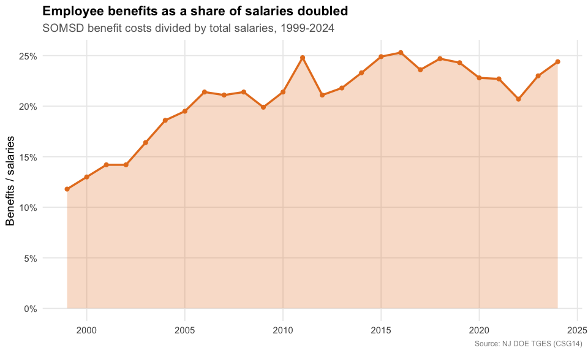
3. Who pays the bill is shifting
SOMSD is a property-tax town: local taxpayers funded about 85% of the budget in 2010. But the state’s share has roughly doubled since then (from 12% to 26%), while the local share fell to 70%. Federal money never tops a few percent.
revenue <- bind_rows(
somsd_series("VITSTAT_TOTAL", "Revenue: Local %") %>% mutate(source = "Local taxes"),
somsd_series("VITSTAT_TOTAL", "Revenue: State %") %>% mutate(source = "State aid")
)
stopifnot(nrow(revenue) > 0)
revenue %>%
tidyr::pivot_wider(id_cols = end_year, names_from = source, values_from = value)
#> # A tibble: 15 × 3
#> end_year `Local taxes` `State aid`
#> <dbl> <dbl> <dbl>
#> 1 2010 0.845 0.121
#> 2 2011 0.891 0.086
#> 3 2012 0.857 0.116
#> 4 2013 0.845 0.134
#> 5 2014 0.852 0.124
#> 6 2015 0.861 0.136
#> 7 2016 0.842 0.139
#> 8 2017 0.831 0.148
#> 9 2018 0.825 0.159
#> 10 2019 0.813 0.169
#> 11 2020 0.801 0.183
#> 12 2021 0.761 0.221
#> 13 2022 0.718 0.248
#> 14 2023 0.696 0.244
#> 15 2024 0.704 0.255
ggplot(revenue, aes(end_year, value, color = source)) +
geom_line(linewidth = 1.2) +
geom_point(size = 2) +
scale_color_manual(values = c("Local taxes" = somsd_navy, "State aid" = somsd_teal)) +
scale_y_continuous(labels = percent_format(accuracy = 1)) +
scale_x_continuous(breaks = seq(2010, 2024, 4)) +
labs(title = "Local taxpayers still carry SOMSD, but state aid is rising",
subtitle = "Share of revenue by source",
x = NULL, y = "Share of revenue", color = NULL,
caption = "Source: NJ DOE TGES Vital Statistics") +
theme_nj()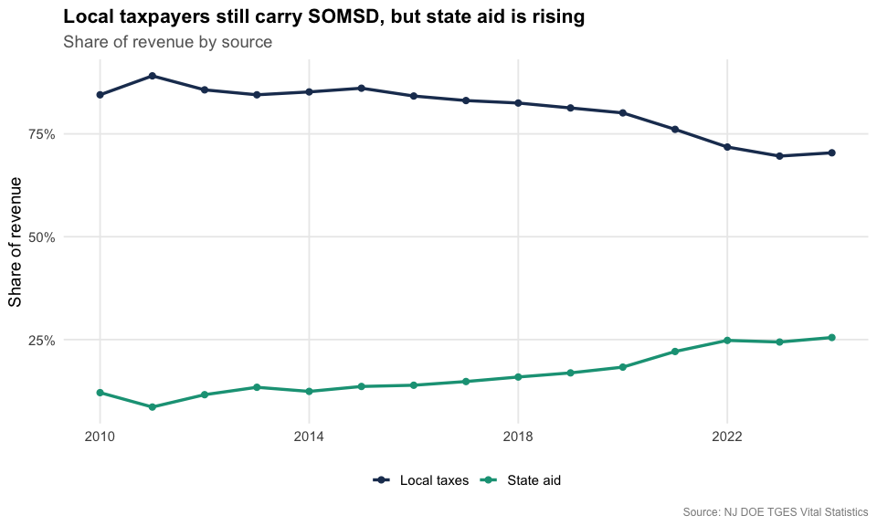
4. Teacher pay up, class sizes down
The median teacher salary nearly doubled over the period, from about $45,000 to roughly $84,000. Over the same stretch the student-to-teacher ratio drifted down from 14:1 toward 11:1, so the district is paying more teachers, more.
salary <- somsd_series("CSG16", "Teacher Salary")
ratio <- somsd_series("CSG16", "Student/Teacher ratio")
stopifnot(nrow(salary) > 0, nrow(ratio) > 0)
salary %>%
inner_join(ratio, by = "end_year", suffix = c("_salary", "_ratio")) %>%
transmute(end_year, median_salary = value_salary, students_per_teacher = value_ratio)
#> # A tibble: 26 × 3
#> end_year median_salary students_per_teacher
#> <dbl> <dbl> <dbl>
#> 1 2000 48624 14.2
#> 2 2001 44696 14
#> 3 2002 50000 14.2
#> 4 2003 49720 13.8
#> 5 2004 54897 13.8
#> 6 2005 58122 13.4
#> 7 2006 58122 13.4
#> 8 2007 54369 12.8
#> 9 2008 67365 12.8
#> 10 2009 69677 12.7
#> # ℹ 16 more rows
ggplot(salary, aes(end_year, value)) +
geom_line(color = somsd_purple, linewidth = 1.2) +
geom_point(color = somsd_purple, size = 2) +
scale_y_continuous(labels = dollar) +
scale_x_continuous(breaks = seq(2000, 2025, 5)) +
labs(title = "Median teacher salary nearly doubled",
subtitle = "SOMSD median classroom-teacher salary",
x = NULL, y = "Median salary",
caption = "Source: NJ DOE TGES (CSG16)") +
theme_nj()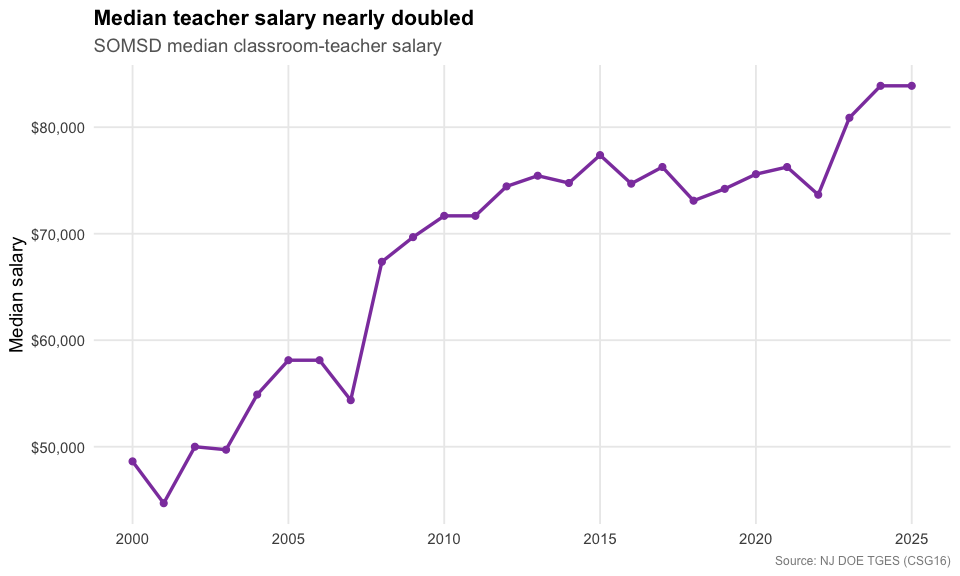
ggplot(ratio, aes(end_year, value)) +
geom_line(color = somsd_teal, linewidth = 1.2) +
geom_point(color = somsd_teal, size = 2) +
scale_x_continuous(breaks = seq(2000, 2025, 5)) +
labs(title = "...while the student-to-teacher ratio fell",
subtitle = "Students per teacher",
x = NULL, y = "Students per teacher",
caption = "Source: NJ DOE TGES (CSG16)") +
theme_nj()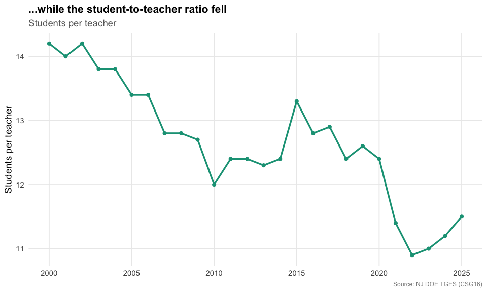
5. Where each dollar goes
TGES breaks the budgetary cost per pupil into its components. In the 2025 budget, classroom instruction is by far the biggest slice (about 61 cents of every dollar), followed by support services, plant operations, and administration.
category_tables <- tribble(
~category, ~table,
"Classroom instruction", "CSG2",
"Support services", "CSG6",
"Plant ops & maintenance", "CSG10",
"Administration", "CSG8",
"Extracurricular", "CSG13"
)
categories <- map_dfr(seq_len(nrow(category_tables)), function(i) {
d <- reports[["2025"]][[category_tables$table[i]]]
r <- filter(d, district_id == SOMSD, end_year == 2025)
tibble(category = category_tables$category[i],
per_pupil = r[["Per Pupil costs"]][1])
})
stopifnot(nrow(categories) > 0, all(!is.na(categories$per_pupil)))
categories %>% arrange(desc(per_pupil))
#> # A tibble: 5 × 2
#> category per_pupil
#> <chr> <dbl>
#> 1 Classroom instruction 12338
#> 2 Support services 3195
#> 3 Plant ops & maintenance 2394
#> 4 Administration 1874
#> 5 Extracurricular 242
ggplot(categories, aes(reorder(category, per_pupil), per_pupil)) +
geom_col(fill = somsd_navy) +
geom_text(aes(label = dollar(per_pupil)), hjust = -0.1, size = 3.5) +
coord_flip() +
scale_y_continuous(labels = dollar, expand = expansion(mult = c(0, 0.15))) +
labs(title = "Where SOMSD spends, per pupil (2025 budget)",
subtitle = "Classroom instruction dominates the budgetary cost per pupil",
x = NULL, y = "Cost per pupil",
caption = "Source: NJ DOE TGES (CSG2, CSG6, CSG8, CSG10, CSG13)") +
theme_nj()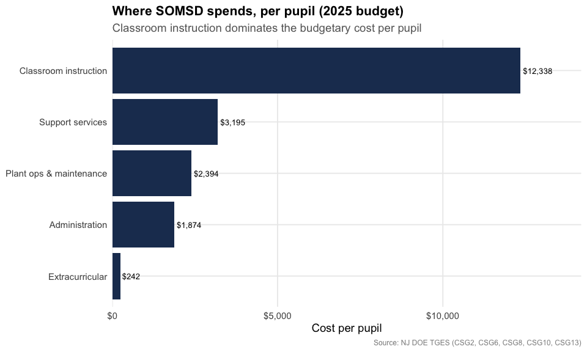
6. Drifting through the pack of big districts
TGES ranks each district against its peer group. SOMSD sits with the large K-12 districts (3,500+ students). In this ranking, 1 = the lowest spender, so a higher number means spending more than peers. SOMSD climbed toward the top of the pack by 2010, slid to near the bottom during its flat decade as peers kept growing, then recovered to mid-pack after the post-2020 surge.
rank <- somsd_series("CSG1", "District rank", "Actuals")
stopifnot(nrow(rank) > 0)
# size of the peer group in the most recent guide, for context
n_peers <- reports[["2025"]][["CSG1"]] %>%
filter(group == "G. K-12 / 3501 +", end_year == 2025,
!is.na(district_id), district_id != "00NA") %>%
nrow()
n_peers
#> [1] 100
rank
#> # A tibble: 26 × 3
#> report_year end_year value
#> <int> <dbl> <int>
#> 1 2001 1999 43
#> 2 2002 2000 46
#> 3 2003 2001 51
#> 4 2004 2002 56
#> 5 2005 2003 56
#> 6 2006 2004 59
#> 7 2007 2005 64
#> 8 2008 2006 64
#> 9 2009 2007 72
#> 10 2010 2008 70
#> # ℹ 16 more rows
ggplot(rank, aes(end_year, value)) +
geom_line(color = somsd_red, linewidth = 1.2) +
geom_point(color = somsd_red, size = 2) +
scale_x_continuous(breaks = seq(2000, 2024, 4)) +
labs(title = "SOMSD's spending rank among large K-12 districts",
subtitle = paste0("Rank within the ", n_peers,
"-district peer group (1 = lowest spender)"),
x = NULL, y = "Spending rank",
caption = "Source: NJ DOE TGES (CSG1). Peer-group composition shifts modestly year to year.") +
theme_nj()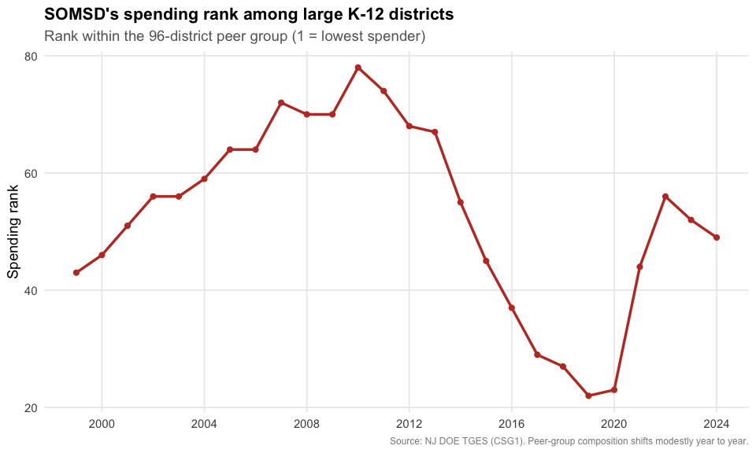
7. A closer look at the classroom dollar
TGES splits classroom instruction into three pieces: salaries and benefits, supplies and textbooks, and “purchased services and other.” Two things jump out. Spending on books and supplies has been frozen near $200 per pupil for 25 years, a steep real-terms cut. Meanwhile purchased services, contracted and out-of-district instruction, went from a rounding error ($7 per pupil in 1999) to $1,804 in 2024, about 15 cents of every classroom dollar.
classroom_parts <- bind_rows(
somsd_series("CSG3", "Per Pupil costs") %>% mutate(part = "Salaries & benefits"),
somsd_series("CSG4", "Per Pupil costs") %>% mutate(part = "Supplies & textbooks"),
somsd_series("CSG5", "Per Pupil costs") %>% mutate(part = "Purchased services & other")
) %>%
mutate(part = factor(part, levels = c("Salaries & benefits",
"Supplies & textbooks",
"Purchased services & other")))
stopifnot(nrow(classroom_parts) > 0)
classroom_parts %>%
filter(end_year %in% c(1999, 2008, 2016, 2024)) %>%
select(end_year, part, value) %>%
arrange(end_year, part)
#> # A tibble: 12 × 3
#> end_year part value
#> <dbl> <fct> <dbl>
#> 1 1999 Salaries & benefits 4316
#> 2 1999 Supplies & textbooks 161
#> 3 1999 Purchased services & other 7
#> 4 2008 Salaries & benefits 7065
#> 5 2008 Supplies & textbooks 198
#> 6 2008 Purchased services & other 35
#> 7 2016 Salaries & benefits 7646
#> 8 2016 Supplies & textbooks 195
#> 9 2016 Purchased services & other 736
#> 10 2024 Salaries & benefits 9753
#> 11 2024 Supplies & textbooks 229
#> 12 2024 Purchased services & other 1804
ggplot(classroom_parts, aes(end_year, value, fill = part)) +
geom_area(alpha = 0.9) +
scale_fill_manual(values = c("Salaries & benefits" = somsd_navy,
"Supplies & textbooks" = somsd_teal,
"Purchased services & other" = somsd_orange)) +
scale_y_continuous(labels = dollar) +
scale_x_continuous(breaks = seq(2000, 2024, 6)) +
labs(title = "The classroom dollar: contracted services moved in",
subtitle = "SOMSD classroom cost per pupil by component",
x = NULL, y = "Cost per pupil", fill = NULL,
caption = "Source: NJ DOE TGES (CSG3, CSG4, CSG5)") +
theme_nj()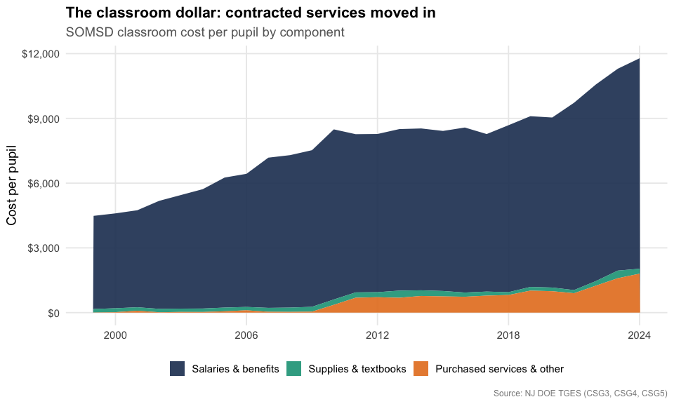
8. Facilities: a frozen line on aging buildings
Plant operations and maintenance, the cost of heating, cleaning, and repairing school buildings, barely budged for over a decade. It hovered around $1,800 to $2,000 per pupil from 2008 through 2022 even as total spending climbed, so its share of the budget fell from about 16% to 12%. That is the kind of deferred upkeep that eventually shows up as a capital referendum. (TGES tracks operating cost, not the separate capital bonds districts float to rebuild.)
facilities <- somsd_series("CSG10", "Per Pupil costs") %>%
select(end_year, facilities = value) %>%
inner_join(somsd_series("CSG1", "Per Pupil costs") %>% select(end_year, total = value),
by = "end_year") %>%
mutate(share = facilities / total)
stopifnot(nrow(facilities) > 0)
facilities
#> # A tibble: 26 × 4
#> end_year facilities total share
#> <dbl> <dbl> <dbl> <dbl>
#> 1 1999 1110 7946 0.140
#> 2 2000 1127 8260 0.136
#> 3 2001 1123 8691 0.129
#> 4 2002 1289 9219 0.140
#> 5 2003 1413 9626 0.147
#> 6 2004 1693 10271 0.165
#> 7 2005 1750 11101 0.158
#> 8 2006 1831 11366 0.161
#> 9 2007 1806 12594 0.143
#> 10 2008 2062 12983 0.159
#> # ℹ 16 more rows
ggplot(facilities, aes(end_year, share)) +
geom_line(color = somsd_red, linewidth = 1.2) +
geom_point(color = somsd_red, size = 2) +
scale_y_continuous(labels = percent_format(accuracy = 1), limits = c(0, NA)) +
scale_x_continuous(breaks = seq(2000, 2024, 6)) +
labs(title = "Facilities' slice of the budget shrank",
subtitle = "Plant operations & maintenance as a share of budgetary cost per pupil",
x = NULL, y = "Facilities share of budget",
caption = "Source: NJ DOE TGES (CSG10 / CSG1)") +
theme_nj()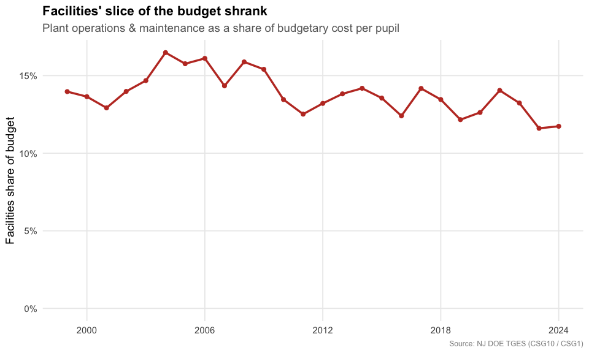
9. What the spending buys: the arts
TGES tells you what a district spends; the School Performance Report
tells you what students actually take. In a town known for its arts
scene, that second question matters.
fetch_arts_enrollment() pulls visual and performing arts
participation, and SOMSD runs well ahead of the state at every grade
level. The gap is widest in middle school: nearly every 6th-8th grader
takes an arts course, 86% take music (vs 64% statewide), and 30%
take dance against a state rate of just 4%.
arts_raw <- fetch_arts_enrollment(2024, level = "district") %>%
filter(district_id == "4900")
stopifnot(nrow(arts_raw) > 0)
arts_any <- arts_raw %>%
transmute(grades,
SOMSD = as.numeric(any_visual_perf_art_district),
`New Jersey` = as.numeric(any_visual_perf_art_state)) %>%
tidyr::pivot_longer(c(SOMSD, `New Jersey`), names_to = "geo", values_to = "pct")
stopifnot(nrow(arts_any) > 0)
arts_any
#> # A tibble: 6 × 3
#> grades geo pct
#> <chr> <chr> <dbl>
#> 1 Grades 6-8 SOMSD 99.7
#> 2 Grades 6-8 New Jersey 90
#> 3 Grades 9-12 SOMSD 63.4
#> 4 Grades 9-12 New Jersey 51.3
#> 5 Grades KG-5 SOMSD 99.4
#> 6 Grades KG-5 New Jersey 93.6
ggplot(arts_any, aes(grades, pct, fill = geo)) +
geom_col(position = position_dodge(width = 0.75), width = 0.7) +
geom_text(aes(label = paste0(round(pct), "%")),
position = position_dodge(width = 0.75), vjust = -0.4, size = 3.3) +
scale_fill_manual(values = c("SOMSD" = somsd_navy, "New Jersey" = "gray65")) +
scale_y_continuous(labels = percent_format(scale = 1), limits = c(0, 108)) +
labs(title = "SOMSD students take the arts at above-state rates",
subtitle = "Share taking any visual or performing arts course, 2023-24",
x = NULL, y = "Students taking an arts course", fill = NULL,
caption = "Source: NJ DOE School Performance Report (Visual & Performing Arts)") +
theme_nj()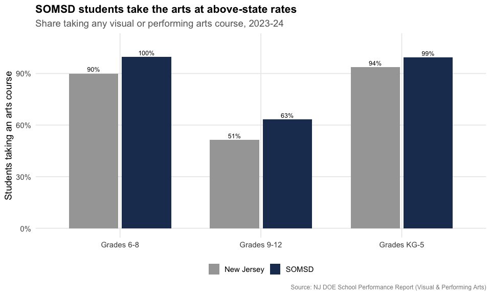
arts_disc <- arts_raw %>%
filter(grades == "Grades 6-8") %>%
select(music_district, music_state, dance_district, dance_state,
drama_district, drama_state, vis_arts_district, vis_arts_state) %>%
mutate(across(everything(), as.numeric)) %>%
tidyr::pivot_longer(everything(),
names_to = c("discipline", "geo"),
names_pattern = "(.*)_(district|state)",
values_to = "pct") %>%
mutate(geo = recode(geo, district = "SOMSD", state = "New Jersey"),
discipline = recode(discipline, music = "Music", dance = "Dance",
drama = "Drama/Theater", vis_arts = "Visual arts"))
stopifnot(nrow(arts_disc) > 0)
arts_disc
#> # A tibble: 8 × 3
#> discipline geo pct
#> <chr> <chr> <dbl>
#> 1 Music SOMSD 85.6
#> 2 Music New Jersey 64.3
#> 3 Dance SOMSD 29.5
#> 4 Dance New Jersey 4.3
#> 5 Drama/Theater SOMSD 15.3
#> 6 Drama/Theater New Jersey 7.7
#> 7 Visual arts SOMSD 78.3
#> 8 Visual arts New Jersey 68.9
ggplot(arts_disc, aes(reorder(discipline, -pct), pct, fill = geo)) +
geom_col(position = position_dodge(width = 0.75), width = 0.7) +
geom_text(aes(label = paste0(round(pct), "%")),
position = position_dodge(width = 0.75), vjust = -0.4, size = 3.3) +
scale_fill_manual(values = c("SOMSD" = somsd_navy, "New Jersey" = "gray65")) +
scale_y_continuous(labels = percent_format(scale = 1), limits = c(0, 100)) +
labs(title = "Middle-school arts: SOMSD vs New Jersey",
subtitle = "Share of grade 6-8 students taking each art form, 2023-24",
x = NULL, y = "Students participating", fill = NULL,
caption = "Source: NJ DOE School Performance Report (Visual & Performing Arts)") +
theme_nj()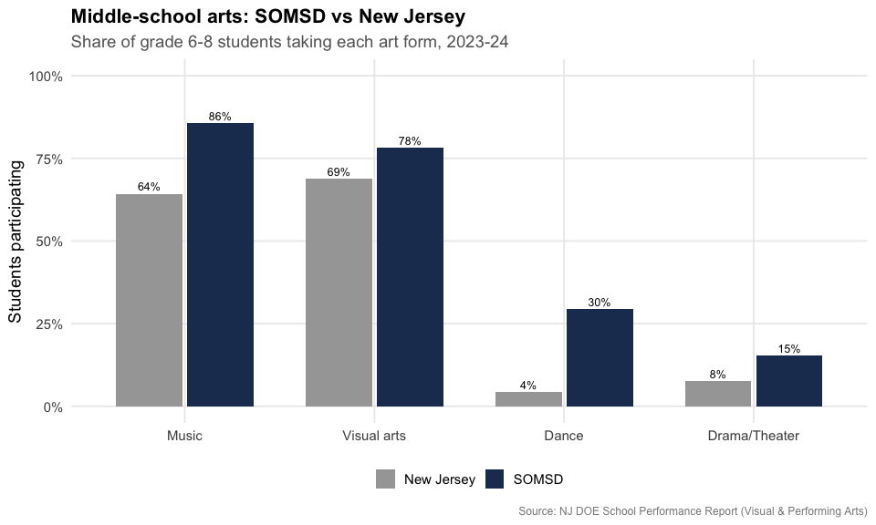
Reproduce this yourself
Every chart above comes from fetch_tges(). Once you have
a year’s tables (spending_2025 <- fetch_tges(2025)),
pulling SOMSD’s benefits trend is two lines:
spending_2025[["CSG14"]] %>%
filter(district_id == "4900", calc_type == "Actuals") %>%
select(district_name, end_year, `% of Total Salaries`)
#> # A tibble: 2 × 3
#> district_name end_year `% of Total Salaries`
#> <chr> <dbl> <dbl>
#> 1 South Orange-Maplewood 2023 0.23
#> 2 South Orange-Maplewood 2024 0.244Swap the district code for any NJ district, or loop
fetch_many_tges(2001:2025) for the full history.
sessionInfo()
#> R version 4.6.0 (2026-04-24)
#> Platform: x86_64-pc-linux-gnu
#> Running under: Ubuntu 24.04.4 LTS
#>
#> Matrix products: default
#> BLAS: /usr/lib/x86_64-linux-gnu/openblas-pthread/libblas.so.3
#> LAPACK: /usr/lib/x86_64-linux-gnu/openblas-pthread/libopenblasp-r0.3.26.so; LAPACK version 3.12.0
#>
#> locale:
#> [1] LC_CTYPE=C.UTF-8 LC_NUMERIC=C LC_TIME=C.UTF-8
#> [4] LC_COLLATE=C.UTF-8 LC_MONETARY=C.UTF-8 LC_MESSAGES=C.UTF-8
#> [7] LC_PAPER=C.UTF-8 LC_NAME=C LC_ADDRESS=C
#> [10] LC_TELEPHONE=C LC_MEASUREMENT=C.UTF-8 LC_IDENTIFICATION=C
#>
#> time zone: UTC
#> tzcode source: system (glibc)
#>
#> attached base packages:
#> [1] stats graphics grDevices utils datasets methods base
#>
#> other attached packages:
#> [1] tibble_3.3.1 purrr_1.2.2 scales_1.4.0
#> [4] dplyr_1.2.1 ggplot2_4.0.3 njschooldata_0.9.18
#>
#> loaded via a namespace (and not attached):
#> [1] utf8_1.2.6 sass_0.4.10 generics_0.1.4 tidyr_1.3.2
#> [5] stringi_1.8.7 hms_1.1.4 digest_0.6.39 magrittr_2.0.5
#> [9] evaluate_1.0.5 grid_4.6.0 timechange_0.4.0 RColorBrewer_1.1-3
#> [13] fastmap_1.2.0 cellranger_1.1.0 jsonlite_2.0.0 codetools_0.2-20
#> [17] textshaping_1.0.5 jquerylib_0.1.4 cli_3.6.6 crayon_1.5.3
#> [21] rlang_1.2.0 bit64_4.8.2 withr_3.0.3 cachem_1.1.0
#> [25] yaml_2.3.12 otel_0.2.0 parallel_4.6.0 downloader_0.4.1
#> [29] tools_4.6.0 tzdb_0.5.0 vctrs_0.7.3 R6_2.6.1
#> [33] lifecycle_1.0.5 lubridate_1.9.5 snakecase_0.11.1 stringr_1.6.0
#> [37] bit_4.6.0 fs_2.1.0 vroom_1.7.1 foreign_0.8-91
#> [41] ragg_1.5.2 janitor_2.2.1 pkgconfig_2.0.3 desc_1.4.3
#> [45] pkgdown_2.2.0 pillar_1.11.1 bslib_0.11.0 gtable_0.3.6
#> [49] glue_1.8.1 systemfonts_1.3.2 xfun_0.59 tidyselect_1.2.1
#> [53] knitr_1.51 farver_2.1.2 htmltools_0.5.9 labeling_0.4.3
#> [57] rmarkdown_2.31 readr_2.2.0 compiler_4.6.0 S7_0.2.2
#> [61] readxl_1.5.0